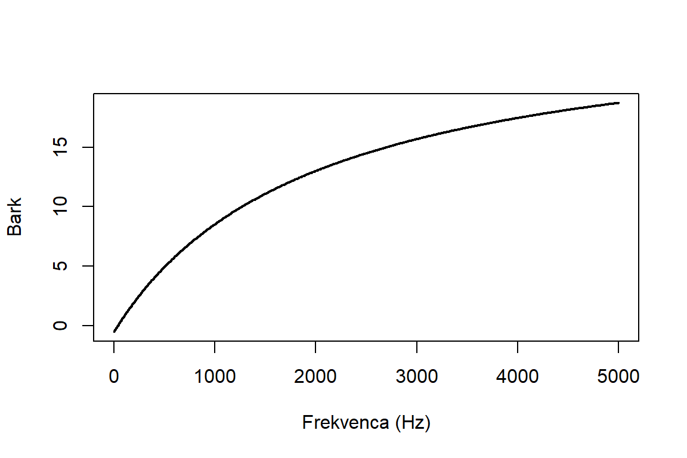
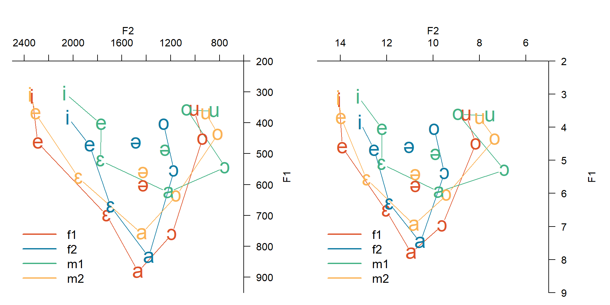
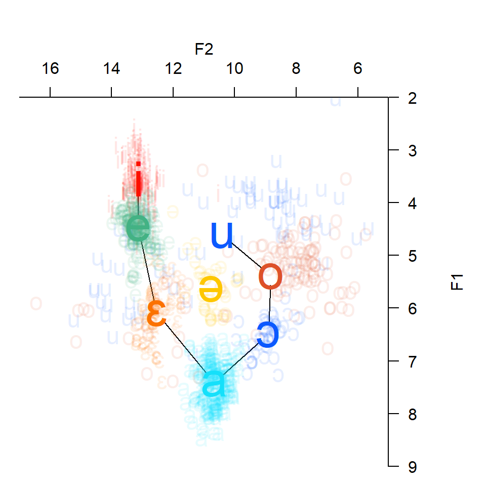
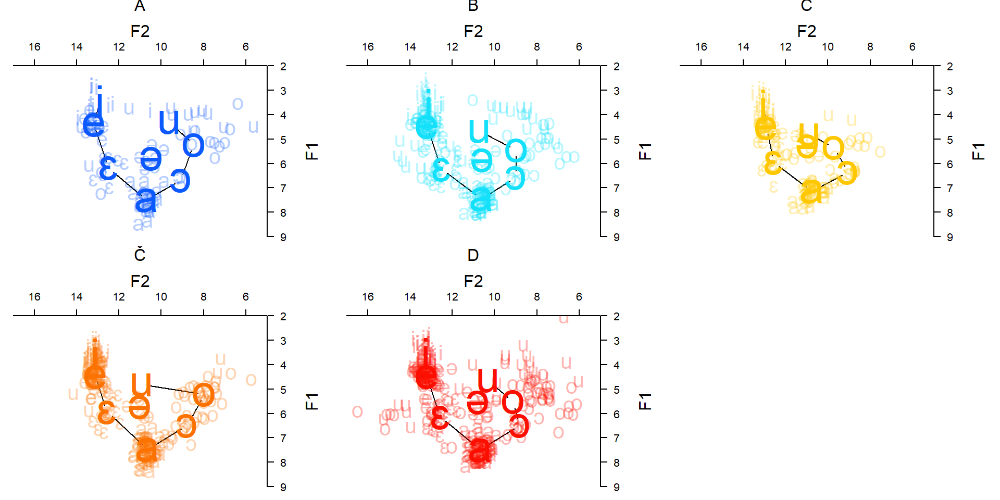
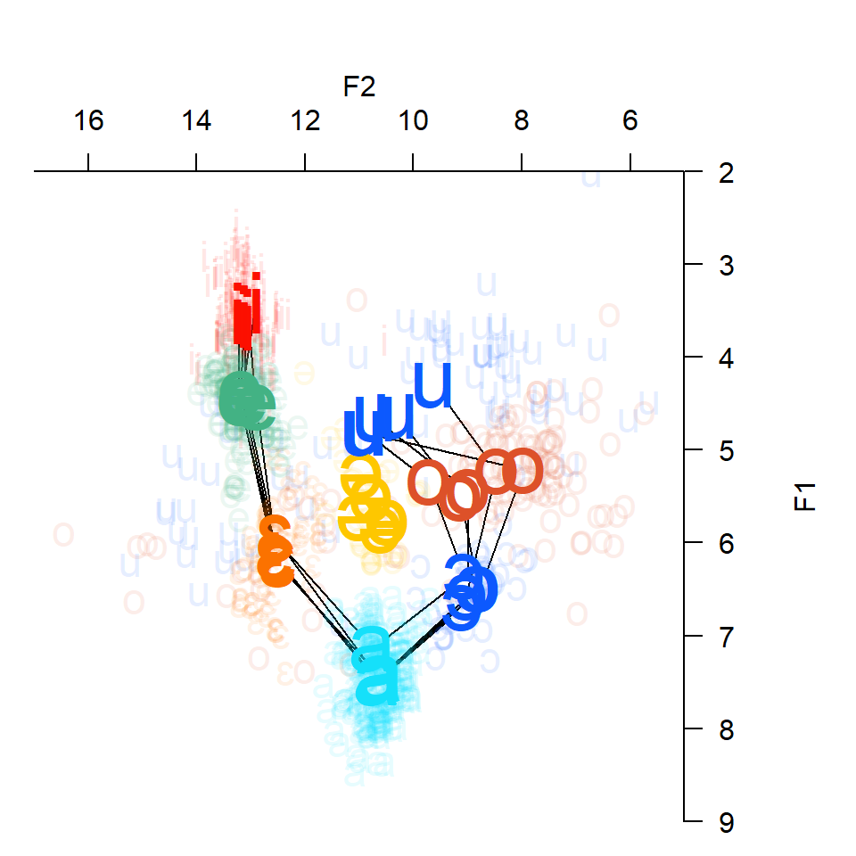
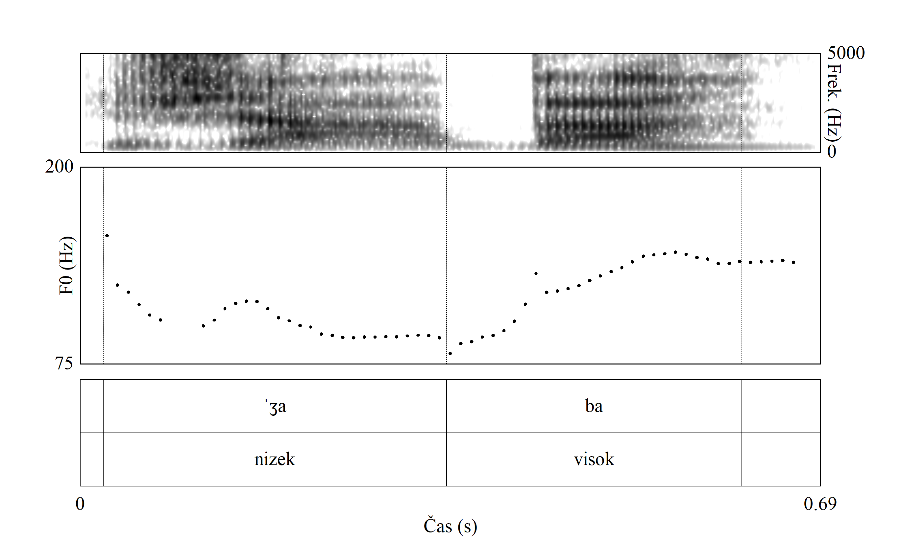

Uporaba računalniškega programa Praat pri poučevanju akustične fonetike
asist. dr. Luka Horjak
Univerza v Ljubljani, Filozofska fakulteta, Oddelek za slovenistiko
Izhodišče

Formanti /i - a - u/, Toporišič (2000, str. 91)
Izhodišče

Formanti (shema), Toporišič (2000, str. 49)
Praat (1992–)
- niz. govoriti
- brezplačen, odprtokoden program
- analiza zvočnega signala (fonetika, fonologija)
- Inštitut za fonetiko Univerze v Amsterdamu
- Paul Boersma in David Weenink
- 6.4.67 (21. maj 2026, Boersma & Weenink (2026))

Uporaba v pedagoške namene
- Vaje pri predmetih (FF UL, Oddelek za slovenistiko):
- Govorna tehnika
- Besedilna fonetika SKJ
- Cilja:
- razumevanje abstraktnih pojavov
- samostojna analiza, raziskovanje
- Možnosti:
- formantna struktura (F1–F4)
- trajanje zvočnih pojavov
- intonacija, tonemski naglas, register
- jakost
- čas do začetka zvenečnosti (angl. VOT)
Formanti samoglasnikov
- Kaj je formant?
[J]akostno okrepljeno področje harmoničnih (ali drugačnih) tonov ali slušne energije na značilnem frekvenčnem področju posameznih (vrst) glasov. Zlasti izrazite ožjepasovne formante imajo samoglasniki, manj izrazite zvočniki, širše formantno področje pa nezvočniki. (Toporišič, 1992, str. 44–45.)
- Kent & Read (2002, str. 24): naravni način vibracije (resonance) govorne cevi; formantna frekvenca in pasovna širina.
- F1: sorazmeren z odprtostjo samoglasnika; obratno sorazmeren z višino
- F2: sorazmeren s sprednostjo samoglasnika (Kent & Read, 2002; Liker, 2024; Pétursson & Neppert, 2002; Pompino-Marschall, 2009; Weckwerth, 2022)
Formantni samoglasnikov: slovenščina
Dosedanje raziskave:
Prvi eksperiment: Meritve svojih samoglasnikov
- naglašeni samoglasniki
- snemanje v studiu FF UL
- branje povedi, ca. 20–30 min
- samostojne meritve (F1 in F2)
- izdelava izrisov v R (paket phonR; McCloy (2016))
- pretvorba iz Hz v Barkovo lestvico
\[ \mathrm{Bark} = \frac{26.81 \cdot f}{1960 + f} - 0.53 \]
- Skala preslika mesto frekvence na bazilarno membrano, ki je dolga ca. 32 mm in ima dva in pol zavoja. Različna mesta na membrani vibrirajo z različno frekvenco (20–20.000 Hz) (Johnson, 2012; Yang, 2022).
Analiza samoglasnikov (F1 x F2) študentov

Levo: vrednosti formantov v Hz; desno: vrednost formantov v Bark.
Analiza samoglasnikov (F1 x F2) predsednice države I.
- Analiza samoglasnikov predsednice države
- Gradivo: posnetek predvolilnega soočenja (RTV SLO, 20. 10. 2022), ca. 6 min
- Meritev F1 in F2, pretvorba v Bark skalo
- Odstranitev osamelcev: \[ z = \frac{f - \mu}{\sigma}, \qquad |z| \geq 3 \quad \text{za } \operatorname{F}_1 \text{ in } \operatorname{F}_2 \] (\(f\) – frekvenca formanta; \(\mu\) – populacijsko povprečje; \(\sigma\) – populacijski standardni odklon)

Analiza samoglasnikov (F1 x F2) predsednice države II.

Prikaz meritev samoglasnikov predsednice države za vse merilce.
Analiza samoglasnikov (F1 x F2) predsednice države III.
- skupaj 970 meritev
| Št. | n | F1 | SD | F2 | SD |
|---|---|---|---|---|---|
| A | 12 | 5,23 | 0,93 | 8,47 | 2,18 |
| B | 23 | 5,45 | 0,81 | 8,99 | 2,17 |
| C | 13 | 5,34 | 0,33 | 9,71 | 1,68 |
| Č | 28 | 5,22 | 0,50 | 7,97 | 0,79 |
| D | 44 | 5,51 | 0,69 | 9,13 | 2,75 |
Opomba. Samoglasnik /o/ (vrednosti v Bark).

Tonemski naglas
- Raziskave: Srebot-Rejec (2000b, 2000a), Šuštaršič & Tivadar (2005)
- tretja izdaja Slovarja slovenskega knjižnega jezika (eSSKJ)
- iztočnice na črko ⟨ž⟩ (npr. žaba, železobetonski, žlampati), stanje: 10. 11. 2020
- namen:
- preveriti usklajenost opisa s posnetkom
- prepoznavanje narave tonskih potekov (*L+H, *H+L)
Tonemski naglas: prikaz I.

Tonemski naglas: prikaz II.

Zaključek
- Uporaba Praata pri pouku akustičnofonetičnih vsebin omogoča:
- razumevanje povezave med akustičnimi lastnostmi samoglasnikov in položajem jezika v ustni votlini
- razumevanje fonetičnih in fonoloških terminov
- analizo realnega govora
- vizualno prepoznavo pojavov (npr. tonskega poteka)
Hvala za pozornost
Literatura
Boersma, P., & Weenink, D. (2026). Praat: doing phonetics by computer (Različica 6.4.65) [Software]. https://www.fon.hum.uva.nl/praat/
Johnson, K. (2012). Acoustic and auditory phonetics (Third edition). Wiley-Blackwell.
Jurgec, P. (2005). Formant frequencies of standard Slovene vowels. Govor, 22(2), 127–144. https://hrcak.srce.hr/clanak/256498
Jurgec, P. (2006). Formantne frekvence samoglasnikov v tonemski in netonemski standardni slovenščini = Formant frequencies of vowels in tonal and non-tonal standard Slovenian. Slovensko jezikoslovje danes, 54(4), 103–114,. http://www.dlib.si/details/URN:NBN:SI:DOC-7EOBRGZ2
Kent, R. D., & Read, C. (2002). The Acoustic Analysis of Speech. Singular/Thomson Learning.
Lehiste, I. (1961). The Phonemes of Slovene. International Journal of Slavic Linguistics and Poetics, 4, 48–66.
Liker, M. (2024). Koartikulacija: Što sve ne znamo o govoru? Ibis grafika.
McCloy, D. R. (2016). phonR: Tools for phoneticians and phonologists (Različica 1.0-7) [Software]. http://drammock.github.io/phonR/
Ozbič, M. (1998a). Akustična spektralna FFT analiza samoglasniškega sistema slovenskega jezika pri tržaških Slovencih. Defektologica slovenica: revija defektologov in specialnih pedagogov Slovenije, 6(1), 22–51.
Ozbič, M. (1998b). Razmerja med formanti samoglasnikov matične in tržaške slovenščine. Uporabno jezikoslovje. Revija Društva za uporabno jezikoslovje Slovenije, (6), 124–135.
Petek, B., Šuštaršič, R., & Komar, S. (1996). An acoustic analysis of contemporary vowels of the standard Slovenian language. 133–136. http://www.asel.udel.edu/icslp/cdrom/vol1/820/a820.pdf
Pétursson, M., & Neppert, J. (2002). Elementarbuch der Phonetik. Helmut Buske Verlag.
Pompino-Marschall, B. (2009). Einführung in die Phonetik (3., durchgesehene Aufl.). Walter de Gruyter.
Skubic, D., & Ozbič, M. (2018). Samoglasniki v stiku: primer slovensko-italijanskih dvojezičnih govork. Jezik in slovstvo, 63(1), 3–18. https://www.dlib.si/details/URN:NBN:SI:DOC-J8ZY4HSM
Srebot-Rejec, T. (2000a). Ali je današnja knjižna slovenščina še tonematična? V Razprave II. razreda SAZU (str. 51–66). Slovenska akademija znanosti in umetnosti.
Srebot-Rejec, T. (2000b). O tonemskem naglasu v nevtralnem stavčnem položaju v knjižni slovenščini. V J. Zoltan (Ur.), Slovensko jezikoslovje danes in jutri (str. 125–133). Zavod Republike Slovenije za šolstvo.
Šuštaršič, R., & Tivadar, H. (2005). Perception of tonemicity in Standard Slovene. Govor, 22(1), 23–35.
Tivadar, H. (2003). Govorjena podoba slovenskega knjižnega jezika – pravorečni vidik [Magistrsko delo]. Univerza v Ljubljani.
Tivadar, H. (2004). Fonetično-fonološke lastnosti samoglasnikov v sodobnem knjižnem jeziku. Slavistična revija, 52(1), 31–47. https://www.dlib.si/details/URN:NBN:SI:doc-2NJQVSWD
Tivadar, H. (2008). Kakovost in trajanje samoglasnikov v govorjenem knjižnem jeziku [Doktorska disertacija]. Univerza v Ljubljani.
Tivadar, H. (2010). Normativni vidik slovenščine v 3. tisočletju – knjižna slovenščina med realnostjo in idealnostjo. Slavistična revija, 58(1), 105–116. http://www.dlib.si/details/URN:NBN:SI:DOC-BHCJ5UO8
Toporišič, J. (1975). Formanti slovenskega knjižnega jezika. Slavistična revija, 23(2), 153–196.
Toporišič, J. (1992). Enciklopedija slovenskega jezika. Obzorja.
Toporišič, J. (2000). Slovenska slovnica. Obzorja.
Varošanec-Škarić, G., Bašić, I., & Kišiček, G. (2017). Comparison of vowel space of male speakers of Croatian, Serbian and Slovenian language. 142–146.
Varošanec-Škarič, G. (2019). Forenzična fonetika. Ibis grafika.
Weckwerth, J. (2022). Vowels. V R.-A. Knight & J. Setter (Ur.), The Cambridge Handbook of Phonetics (str. 40–64). Cambridge University Press.
Yang, B. (2022). Measuring Vowels. V R.-A. Knight & J. Setter (Ur.), The Cambridge Handbook of Phonetics (str. 261–284). Cambridge University Press.